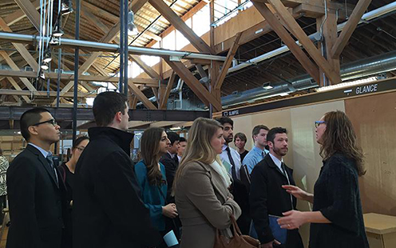
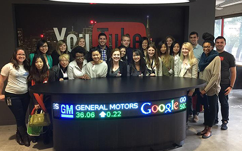

CURRENT STUDENTS
DESIGN. FASHION. ART. ARCHITECTURE.


CAREER SERVICES FOR ART
HOW TO USE CAREER SERVICES:
- Make a 1:1 appointment. One-on-one advising helps students crystallize their interests and guides them on how to structure the search. In the process, students will identify and develop the tools to effectively target prospects—whether for an internship, job, residency, fellowship, graduate school, or other professional opportunity. Students may also schedule a 1:1 mock interview anytime throughout the year. To make an appointment with Jen Meyer or another adviser, call 314.935.5930.
- Get help in a pinch during the Quick Advising Hour. Beginning early in the fall semester, Jen Meyer will take "quick questions" during the noon hour every Wednesday in the 005 Steinberg office. Students must have had at least one 1:1 advising appointment before accessing. Sign-up sheets will be posted outside the office each Tuesday prior.
- Sign up for a Pro Practices Seminar. The Pro Practices seminar is designed to provide a foundation for students to confidently pursue professional, transitional, and further academic opportunities. For more information, contact Jen Meyer.
- Take advantage of special opportunities—both on and off campus. Students are encouraged to connect and participate in both the Sam Fox School community and in the larger arts and design community in the St. Louis area and beyond. The Career Services office works closely with faculty and staff to circulate and promote opportunities to work with visiting artists, engage with local galleries, apply for grants, join collaborative projects, attend Road Shows in other cities, etc. Announcements will be sent via e-mail.
- Attend campus-wide Career Center events, workshops, and other programs. The main office of the Career Center, located in the DUC, is another resource for students at the Sam Fox School. The Career Center hosts an all-campus career fair in the fall and spring, in addition to skill-building workshops and other ongoing programs. In the spring, juniors should look for announcements re: Junior Jumpstart, which will have a concentrated art and design track again this year.
CONTACT CAREER SERVICES
The Sam Fox School is dedicated to assisting students and alumni in developing the necessary skills for a lifetime of successful career management. In addition to Washington University's main Career Center, the School has its own Career Services office. Our career advisers will guide you through specialized programs, help you structure your career search, and give you the tools you need to reach the best prospects for internships, residencies, fellowships, graduate schools, jobs, or other professional placements. They will also help you make connections with our extensive network of alumni working throughout the world.
CAREER SERVICES FOR ARCHITECTURE
HOW TO USE CAREER SERVICES:
- Make a 1:1 appointment. To make a 1:1 appointment, please call the Career Center at 314.935.5930, or stop by our office in 005 Steinberg during our office hours, or follow the directions in this link for online scheduling. Feel free to request a certain advisor, meet with someone new, or ask for a recommendation. You'll probably schedule something for about a week or two in the future. The semester goes by quickly, and we encourage you to schedule appointments with us early.
- Take advantage of Quick Advising. This is a great chance to meet with us if you have only a few small questions or want a brief review of something. Students must have had at least one 1:1 advising appointment to take advantage of these sessions. E-mail reminders for Quick Advising days will be sent out, and sign-up sheets will be posted outside our office two days prior to the date.
- Attend campus-wide Career Center events, workshops, and other programs. There will be a host of programs dedicated to professional development throughout the school year. These include Road Shows, resume and cover letter workshops, mock interview practice, portfolio reviews, and an Architecture + Landscape Architecture Career Fair; click here to download the spring 2016 schedule for architecture-related events. We will also post information on CAREERlink and send e-mail reminders for events.
- In addition to the annual University-wide Internship & Job Career Fair, the Sam Fox School hosts an internship and job fair specifically geared toward the fields of architecture and landscape architecture. At this annual event, students and recent alumni have the opportunity to meet with top firms and professional and trade organizations, network with employers and faculty, and have their portfolios reviewed by professionals in the field. Past participants include 360 Architecture, Callison LLC, Cannon Design, Creative Exchange Lab, EYP Architecture & Engineering, Forum Studio, Hastings+Chivetta Architects, PGAV Destinations, Ross & Baruzzini, Skidmore, Owings & Merrill LLP (SOM), and Wallace Roberts & Todd.